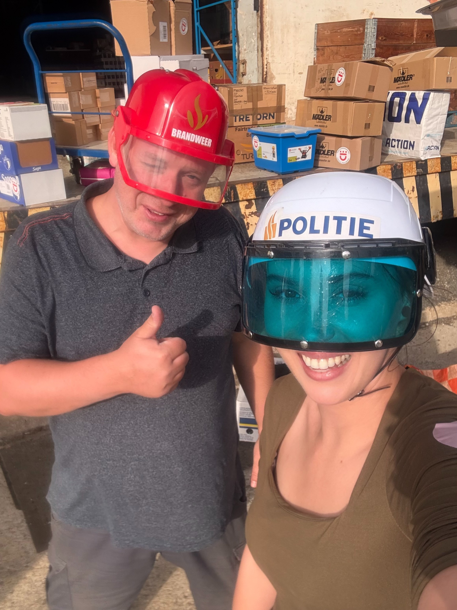
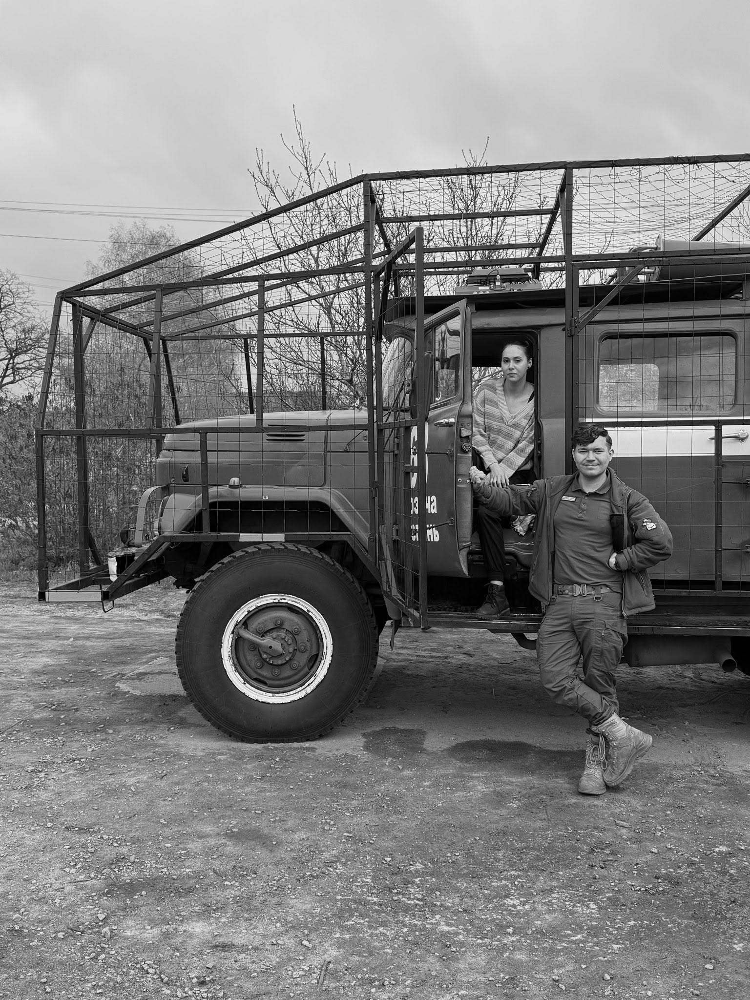
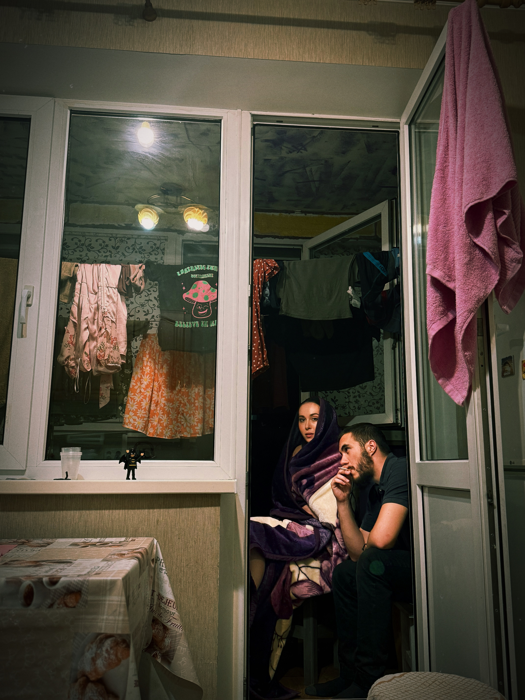
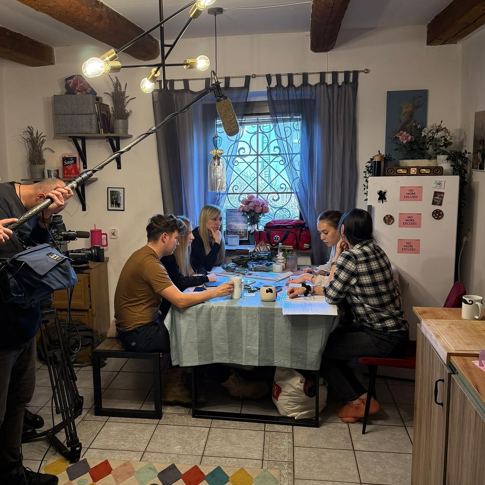

Сара
Автор SZALIKI і організатор допомоги. З другого дня війни вона з друзями допомагала перевозити харчі та ковдри. Згодом почала організовувати подальші подорожі Україною – завжди поруч із людьми та їхніми повсякденними потребами.
Слухаємо, організовуємо і йдемо. Під час наступних поїздок ми зрозуміли, наскільки важливо вміти покладатися один на одного.
З нами є люди, які мовчки допомагають і хочуть залишатися анонімними. Ми не будемо розголошувати їхні імена та не виставляти їх перед камерою. Ми просто хочемо сказати: ми вас бачимо і пам’ятаємо. Ваша присутність є частиною цієї подорожі – у довірі, добрих словах і підтримці, яка приходить без шуму.
Дякуємо, що ви тут.
Це лише короткі портрети. Найбільше про нас говорять наші спільні поїздки та люди, яких ми зустрічаємо.
Автор SZALIKI і організатор допомоги. З другого дня війни вона з друзями допомагала перевозити харчі та ковдри. Згодом почала організовувати подальші подорожі Україною – завжди поруч із людьми та їхніми повсякденними потребами.
Не виповнилося 18 років, він почав їздити в Україну з гуманітарною допомогою. Він має медичну освіту та ділиться своїми знаннями з командою, навчаючи того, що, як ми сподіваємося, нам ніколи не доведеться перевіряти на практиці. Він конкретний у своїх діях; він може прямо говорити про страх.
Закінчив художню школу, цікавиться історією та історичною реконструкцією, веде сімейну ферму. Він допомагав людям з початку війни. Він ділиться із Сарою ідеєю створити виставку речей, привезених з України, – щоб розповісти про те, що там відбувається.
Він щодня працює з кіньми. Перша поїздка в Україну завела її одразу до Краматорська. Сара описує її як: спокійну, витривалу, зі здоровою головою на плечах – людину, яка не панікує у важкі хвилини та допомагає відновити рівновагу.
Ми розробили силуети на основі бесіда опублікована в "Gwarek" 14 червня 2026 р. ↗.






